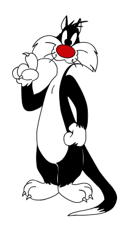

Exhibitions
Brand Royalty, Allouche Gallery, New York, New York, US, September 18–October 19, 2021.
Cultural & Artistic References


Photo Gallery

Brand Royalty, Allouche Gallery, New York, New York, US, September 18–October 19, 2021.
